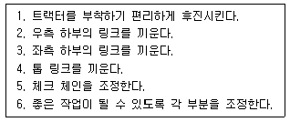

농기계운전기능사 (2007-07-15 기출문제)
1과목: 농기계운전
1. 일반적인 디젤기관의 압축비는?
- (25~30) : 1
- (16~23) : 1
- (7~10) : 1
- (5~6) : 1
(정답률: 73%)

2. 트랙터로 견인하면서 줄로 모여진 건초를 운반차에 싣는 작업기는?
- 헤이 로우더
- 헤이 베일러
- 헤이 레이크
- 헤이 테더
(정답률: 68%)
3. 트랙터 3점 링크를 움직이는 유압실린더는 일반적으로 어떤 형식인가?
- 단동 실린더
- 복동 실린더
- 다단 실린더
- 단·복동 실린더
(정답률: 62%)
4. 몰드 보드 플라우의 구조에서 날 끝이 흙속으로 파고들며 수평 절단 하는 것은?
- 보습
- 바닥쇠
- 발토판
- L자형 빔
(정답률: 65%)
5. 대형 4륜 트랙터용 로터베이터에 사용되는 경운날은?
- 작동형 날
- 특수 날
- 보통 날
- L자형 빔
(정답률: 85%)
6. 트랙터의 독립 브레이크는 어느 때 사용하는 것이 가장 효과 적인가?
- 급브레이크를 필요로 할 때 사용한다.
- 트레일러를 달고 운반 작업을 할 때 사용 한다.
- 경운 작업 시 선회반경을 작게 할 때 사용 한다.
- 항상 사용한다.
(정답률: 79%)
7. 플라우의 부분 중 지축판의 역할로 맞는 것은?
- 흙의 반전작용
- 플라우 자체의 안정유지
- 경폭의 조정
- 절삭작용
(정답률: 66%)
8. 동력경운기의 표준 경폭은?
- 쟁기 10㎝, 로터리 30㎝
- 쟁기 20㎝, 로터리 60㎝
- 쟁기 30㎝, 로터리 70㎝
- 쟁기 40㎝, 로터리 80㎝
(정답률: 73%)
9. 동력예취기 사용 전후 주의할 사항 중 틀린 것은?
- 시동 전 커터날 체결 볼트가 잠겨있는지 점검할 것
- 커터날은 사용 후 기름걸레로 닦은 후 습기가 없는 곳에 보관할 것
- 에어크리너 스폰지는 90시간 사용 후 비눗물로 세척하여 끼울 것
- 상기 보관 시 피스톤이 상사점에 있도록 할 것
(정답률: 71%)
10. 탈곡을 하려고 한다. 급통의 회전수는 어느 정도가 적당한가?
- 벼 보통 : 500~550rpm, 맥류 650~700rpm
- 벼 보통 : 600~800rpm, 맥류 300~500rpm
- 벼 보통 : 500~800rpm, 맥류 100~300rpm
- 벼 보통 : 600~800rpm, 맥류 100~300rpm
(정답률: 50%)
11. 건조기 설치 시 유의사항이 아닌 것은?
- 통풍이 잘 되는 곳에 설치한다.
- 기체의 사방은 수평이 되도록 설치한다.
- 버너의 방향은 벽면과 1m 이하로 떨어지게 설치한다.
- 곡물의 투입과 배출작업 공간을 고려하여 설치한다.
(정답률: 85%)
12. 원동기의 압축비란?
- 행정용적/연소실용적
- 연소실용적/행정용적
- (연소실용적＋행정용적)/연소실용적
- (연소실용적＋행정용적)/행정용적
(정답률: 66%)
13. 트랙터 클러치 페달의 조작방법으로 올바른 것은?
- 느리게 차단하고 빠르게 연결한다.
- 느리게 차단하고 느리게 연결한다.
- 빠르게 차단하고 빠르게 연결한다.
- 빠르게 차단하고 느리게 연결한다.
(정답률: 64%)
14. 플라우를 연결할 때의 작업순서를 바르게 표시한 것은?

- 1 ＞ 2 ＞ 3 ＞ 5 ＞ 4 ＞ 6
- 1 ＞ 3 ＞ 2 ＞ 4 ＞ 5 ＞ 6
- 4 ＞ 1 ＞ 2 ＞ 3 ＞ 5 ＞ 6
- 4 ＞ 6 ＞ 3 ＞ 2 ＞ 1 ＞ 5
(정답률: 78%)
15. 기화기식 가솔린 기관을 시동할 때 농후한 혼합기를 만드는데 사용되는 장치는?
- 초크밸브
- 에어블리더
- 조속기
- 스로틀 밸브
(정답률: 67%)
16. 동력 경운기를 신품으로 구입하여 30시간 정도 사용 후 점검 사항에 해당하는 것은?
- 디젤기관의 경유 교환
- 각부의 죔 상태 확인
- 연료탱크 청소
- 기화기를 분해하여 플로토실을 청소
(정답률: 64%)
17. 경운기를 장기 보관할 경우 피스톤의 위치는 어느 위치에 놓아야 하는가?
- 하사점 위치
- 상사점 위치
- 하사점 근처위치
- 상사점과 하사점 중간위치
(정답률: 75%)
18. 동력 분무가 분무작업 중에 여수량은 액제 흡입량에 몇 %가 유지되도록 하는가?
- 0~5%
- 10~20%
- 25~30%
- 35~40%
(정답률: 58%)
19. 주행하면서 농작물의 예취 및 탈곡을 함께 하는 기계는?
- 바인더
- 리퍼
- 콤바인
- 모워
(정답률: 94%)
20. 이앙기에서 식부본수는 무엇으로 조절하는가?
- 횡ㆍ종 이송조절
- 주간조절
- 유압 와이어 조절
- 플로우트 조절
(정답률: 72%)
21. 다음은 콤바인의 경보장치이다. 해당되지 않는 것은?
- 벼만충 경보
- 충전경보
- 탈곡통 회전경보
- 시동경보
(정답률: 59%)
22. 트랙터에서 유압으로 작동하는 장치는?
- 견인장치
- 차동장치
- 3정 장치
- 시동장치
(정답률: 61%)
23. 냉각장치에서 냉각수의 비점을 올리기 위한 것은?
- 물 재킷
- 라디에이터
- 진공식 캡
- 압력식 캡
(정답률: 52%)
24. 관리기용 두둑 성형기의 작업방법 설명 중 틀린 것은?
- 두둑 작업은 천천히 전진하면서 작업한다.
- 미륜을 떼어내고 두둑 성형판을 장착한다.
- 서로 다른 나선형의 경운날을 좌우가 대칭되도록 로터리에 부착한다.
- 두둑의 모양과 크기에 따라 두둑 성형판을 조절해 주어야 한다.
(정답률: 71%)
25. 동력살분무기의 살포작업 방법 중 틀린 내용은?
- 분관을 좌우로 흔들면서 작업한다.
- 한곳에 많이 살포하지 않도록 한다.
- 살포는 바람을 안고 한다.
- 분구 높이는 작물 위 30㎝정도로 한다.
(정답률: 92%)
26. 농기계 사용 전 난기운전을 충분히 해야 하는 이유가 아닌 것은?
- 농기계를 정상적인 온도로 올리기 위해서
- 엔진의 사용 전 이상 유무를 확인하기 위해
- 엔진 각 부에 윤활을 위해
- 기어의 빠짐 등 변속기의 고장 유무를 확인하기 위해
(정답률: 73%)
27. 경운기의 변속 단수를 3단에서 1단으로 변속했을 때 나타나는 현상 중 맞는 것은?
- 주행속도와 회전력이 감소한다.
- 주행속도와 회전력이 증가한다.
- 주행속도는 감소하나 회전력은 증가한다.
- 주행속도는 증가하나 회전력은 감소한다.
(정답률: 64%)
28. 스피드 스프레이어(고성능 동력분무기)의 덤프나 리프트가 작동하지 않을 때에 확인해야 할 것은?
- 유압오일의 양
- 엔진오일의 양
- 분무기오일의 양
- 마스터 실린더 오일의 양
(정답률: 58%)
29. 다음 중 파종기의 구조에 해당되지 않는 것은?
- 복토기
- 식부암
- 진압바퀴
- 종자 배출장치
(정답률: 76%)
30. 자탈형 콤바인 수확작업 시 주의사항 중 맞는 것은?
- 보통 시계방향으로 선회하면서 작업한다.
- 손으로 벤 벼는 한자리에 세워놓고 탈곡하는 것이 안전하다.
- 알곡이 3번구로 비산되면 풍구의 속도를 올린다.
- 모서리에서 선회할 때에는 기관의 속도를 줄이지 않는다.
(정답률: 43%)
2과목: 농기계전기
31. 다음 전압계를 사용하는 방법 중 틀린 것은?
- (＋), (-)의 단자는 각각 전원의(＋), (-)에 일치한다.
- 전압계의 다이얼을 낮은 볼트 위치에 놓고 측정 후 점차 높은 볼트 위치에 놓는다.
- 측정하고자 하는 부하와 병렬로 연결한다.
- 측정범위의 전압계를 선택한다.
(정답률: 73%)
32. 100V, 500W의 전열기를 80V에서 사용하면 소비전력은 몇 W인가?
- 245
- 320
- 400
- 600
(정답률: 42%)
33. 변압기의 1차 권수 80회, 2차 권수 320회일 때, 2차 측의 전압이 100V이면, 1차 측의 전압은 몇V인가?
- 15
- 25
- 50
- 100
(정답률: 65%)
34. 70[Ah]용량의 축전지를 7[A]로 계속 사용하면 몇 시간동안 사용할 수 있는가?
- 1
- 10
- 77
- 490
(정답률: 84%)
35. 축전지의 통기구멍 마개(Vent Plug)가 6개 있는 축전지 2개를 직렬로 연결하였다면 총전압은 약 몇V인가? (단, 완전 충전된 것이다.)
- 6
- 12
- 24
- 36
(정답률: 60%)
36. 유도전동기의 실제 회전자의 회전속도와 동기속도 는 무엇에 의해 그 속도의 차가 발생하는가?
- 역률
- 출력
- 슬립
- 토크
(정답률: 72%)
37. 오버러닝 클러치형 전동기의 피니언이 링기어와 물리는 것은 무엇 때문인가?
- 전기자가 회전하기 때문에 관성에 의해서 물리기 때문이다.
- 오버러닝 클러치가 회전하기 때문이다.
- 피니언이 회전하면서 관성에 의해서 물리기 때문에
- 시프트레버가 밀기 때문이다.
(정답률: 53%)
38. 단상 유도 전동기 중 고정자에 주권선외에 보조권선(기동권선)을 두어 회전자장을 만들어 기동하고, 가속되면 주권선만으로 운전하는 전동기는?
- 콘덴서 기동형
- 분상 기동형
- 반발 기동형
- 흡인 기동형
(정답률: 47%)
39. 농업용 엔진의 전기장치에서 1차 코일에 발생한 전류는 무엇에 의해서 2차 코일에 높은 전압이 발생되는가?
- 콘덴서
- 단속기
- 점화플러그
- 점화코일
(정답률: 34%)
40. 등유기관의 마그네트 취급방법 중 틀린 것은?
- 자석을 강하게 때리거나 진동시키지 말아야 한다.
- 마그네트는 항상 깨끗하게 유지하여야 한다.
- 운전 중 마그네트 뚜껑을 열어 기름걸레로 가끔 닦아준다.
- 마그네트 보관 장소는 건조한 곳이어야 한다.
(정답률: 87%)
41. 다음 중 전화 플러그에 요구되는 특징으로 틀린 것은?
- 급격한 온도변화에 견딜 것
- 고온 고압에 충분히 견딜 것
- 고전압에 대한 충분한 도전성을 가질 것
- 사용조건의 변화에 따르는 오손, 과열 및 소손 등에 견딜 것
(정답률: 83%)
42. 발전기가 접지되어 있거나 발생전압이 낮을 때 축 전지에서 발전기로 전류가 역류하는 것을 막는 것은?
- 전압 조정기
- 아마추어 조정기
- 컷 아웃 릴레이
- 계자코일
(정답률: 82%)
43. 다음 중 납축전지에 넣는 전해액으로 옳은 것은?
- 묽은 염산액
- 묽은 황산액
- 묽은 초산액
- 묽은 수산액
(정답률: 72%)
44. 다음 중 브러시의 접촉이 불량할 때 소손되기 쉬운 것은?
- 계자코일
- 보올 베어링
- 전기자
- 정류자편
(정답률: 69%)
45. 전조등의 조도가 부족한 원인으로 틀린 것은?
- 축전지의 방전
- 장기사용에 의한 전구의 열화
- 접지의 불량
- 굵은 배선 사용
(정답률: 81%)
3과목: 농기계안전관리
46. 다음은 전기드릴 작업 시 주의사항이다. 틀린 것은?
- 드릴 날의 규격이 작은 것은 고속으로 사용하고 큰 것은 저속으로 한다.
- 드릴 척에는 오일을 주유하지 않는다.
- 큰 구멍을 뚫을 때는 작은 드릴로 구멍을 뚫은 후 큰 드릴로 완성한다.
- 작업이 끝날 때까지 처음과 같은 힘으로 작업하도록 한다.
(정답률: 67%)
47. 트레일러에 물건을 실을 때 무거운 물건의 중심위치는 다음 중 어느 위치에 있어야 안전한가?
- 상부
- 승부
- 하부
- 앞부분
(정답률: 74%)
48. 농용엔진(가솔린)작동 시 발생하는 배기가스에 포함 된 가스 중 인체에 해가 없는 것은?
- CO2
- CO
- NO2
- SO2
(정답률: 82%)
49. 안전작업에 관한 사항 중 틀린 것은?
- 해머 작업하기 전에 반드시 주의를 살핀다.
- 숫돌 작업은 정면을 피해서 작업한다.
- 사다리 각도는 75° 이내로 하고 미끄러지지 않게 한다.
- 긴 물건을 운반할 때 뒤쪽을 위로 올리고 운반한다.
(정답률: 79%)
50. 정비 작업복에 대한 일반수칙으로 틀린 것은?
- 몸에 맞는 것을 입는다.
- 수건을 허리춤에 차고 한다.
- 기름이 밴 장비복을 입지 않는다.
- 상의의 옷자락이 밖으로 나오지 않게 한다.
(정답률: 87%)
51. 안전표지에 있어서 노란색이 표시하는 뜻은?
- 정지
- 방화
- 주의
- 유도
(정답률: 93%)
52. 일반 공구의 사용법 및 관리에 대한 설명 중 적합하지 않은 것은?
- 공구는 사용 전에 반드시 점검해야 한다.
- 공구는 작업에 적합한 것을 사용해야 한다.
- 손이나 공구에 기름이 묻었을 때는 완전히 닦은 후에 사용한다.
- 사용 후에는 창고의 아무 곳에나 걸어둔다.
(정답률: 89%)
53. 다음 중 귀마개를 착용하지 않았을 때 청력장해가 일어날 수 있는 작업은?
- 단조작업
- 압연작업
- 전단작업
- 주조작업
(정답률: 68%)
54. 감전되거나 전기 화상을 입을 위험이 있는 작업에서는 무엇을 사용하여야 안전한가?
- 보호구
- 구급용구
- 신호기
- 구명구
(정답률: 86%)
55. 트랙터 운전 중 안전사항에 대한 설명으로 틀린 것은?
- 트랙터에는 운전자, 보조자 등 2명만 탑승해야 한다.
- 트랙터는 전복될 수 있으므로 항상 안전속도를 지켜야 한다.
- 트레일러에 큰 하중을 싣고 운행할 때 급정거를 해서는 안 된다.
- 회전 시나 브레이크 사용 시에는 반드시 속도를 줄여야 한다.
(정답률: 91%)
56. 내연기관 취급 시 발생하기 쉬운 사고들 중 조작자 부상의원인이 될 수 있는 것은?
- 운동부분 및 동력 전달장치와의 접촉
- 전기계통의 접지불량
- 배기가스의 흡입
- 운전 중 연료보급
(정답률: 65%)
57. 연소이론에 맞지 않는 것은?
- 인화점이 낮을수록 착화점이 낮다.
- 인화점이 높을수록 위험성이 크다.
- 연소범위가 넓을수록 위험성이 크다.
- 착화온도가 낮을수록 위험성이 크다.
(정답률: 50%)
58. 작업장에서 안전수칙을 준수함으로써 얻을 수 있는 것 중 틀린 것은?
- 인간의 생명을 보호한다.
- 기업의 경비를 절감시킨다.
- 기업의 재산을 보호한다.
- 천인률을 증가시킨다.
(정답률: 56%)
59. 다음 중 안전사고의 정의와 거리가 먼 것은?
- 고의성에 의한 사고이다.
- 불안전한 행동이 선행된다.
- 능률을 저하시킨다.
- 인명이나 재산의 손실을 가져온다.
(정답률: 84%)
60. 안전사고 발생원인 중 인적 요인에 속하는 것은?
- 기계점검 정비의 미비
- 누적된 피로
- 불안전한 작업 장소
- 안전장치의 미비
(정답률: 89%)